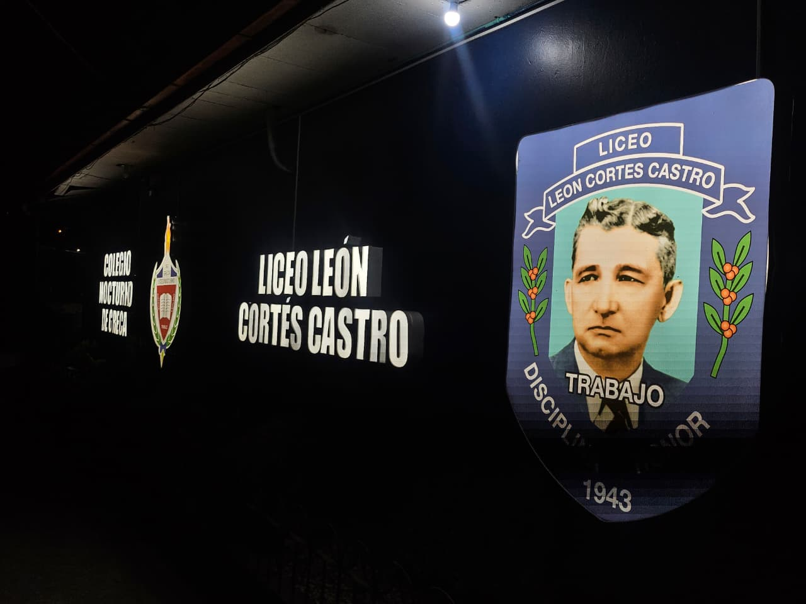
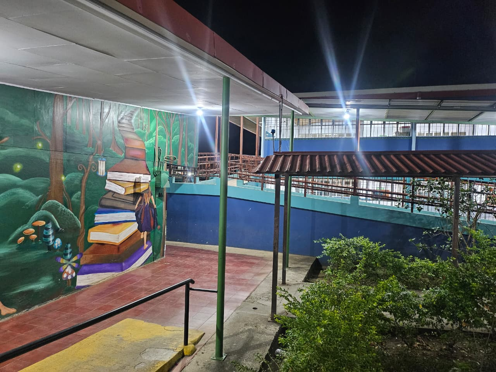
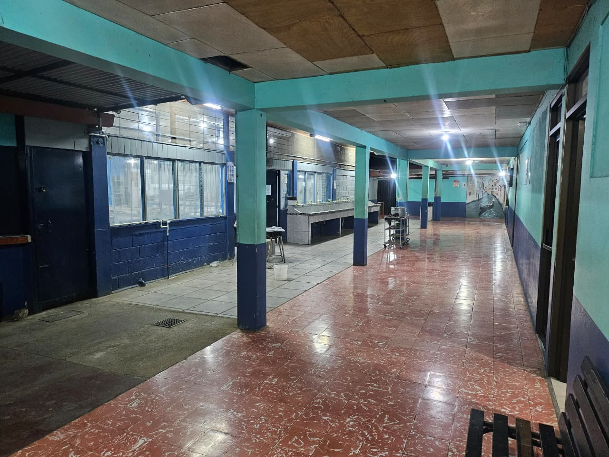
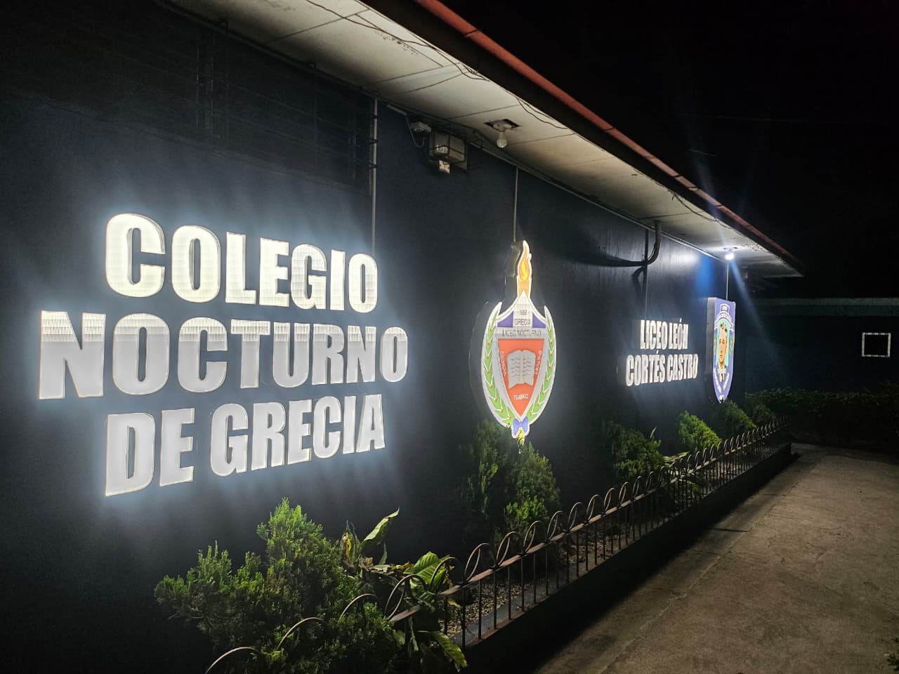
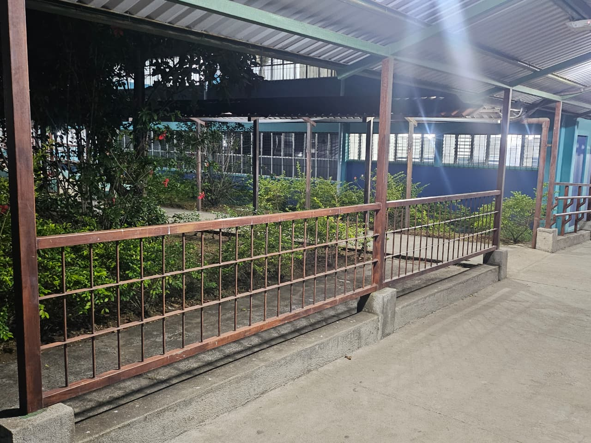
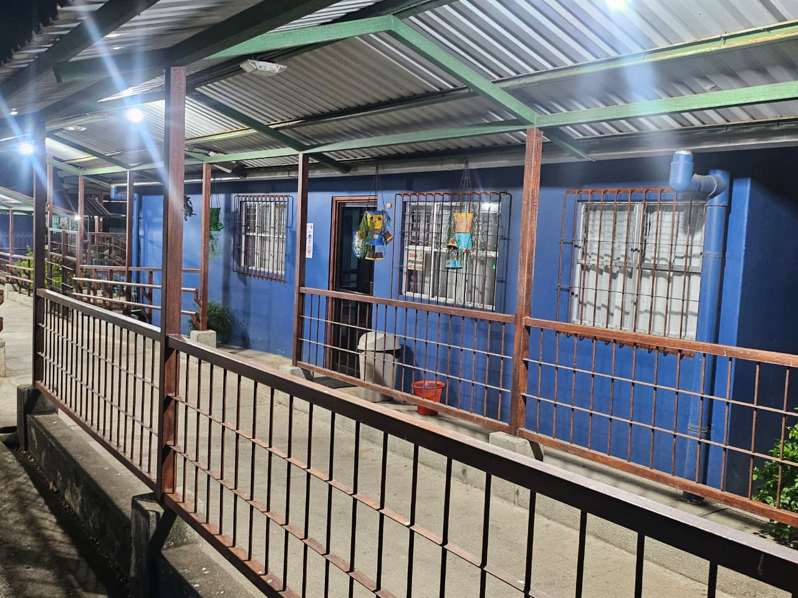
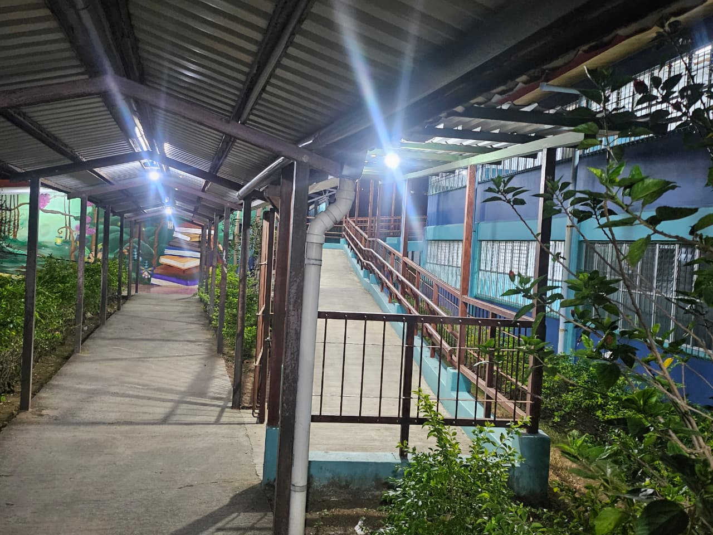
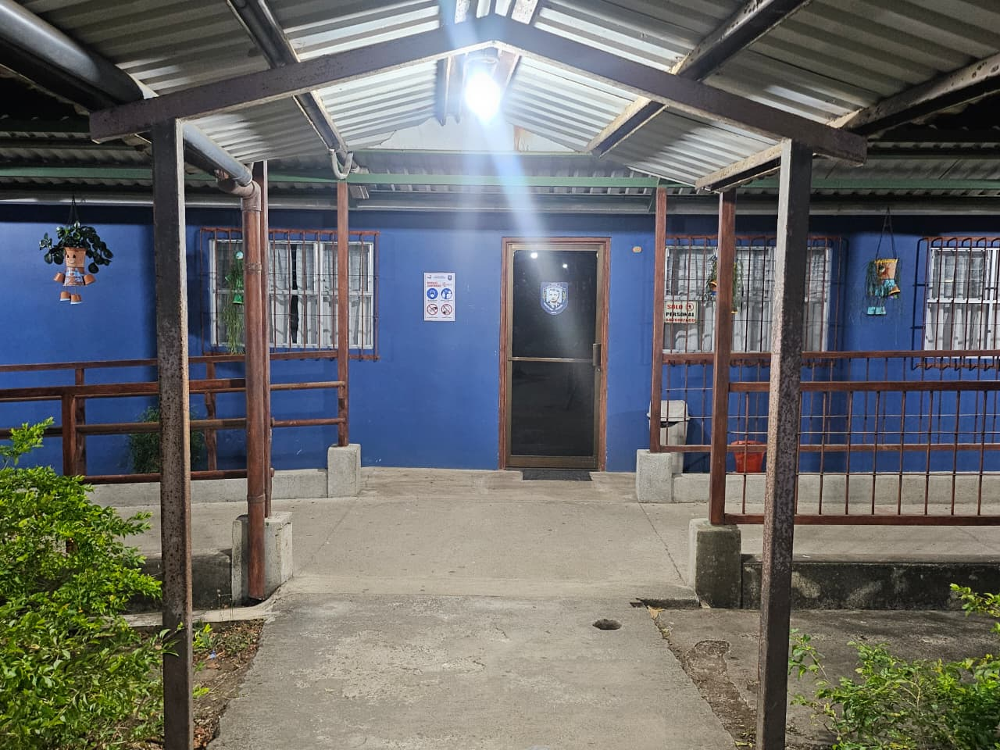
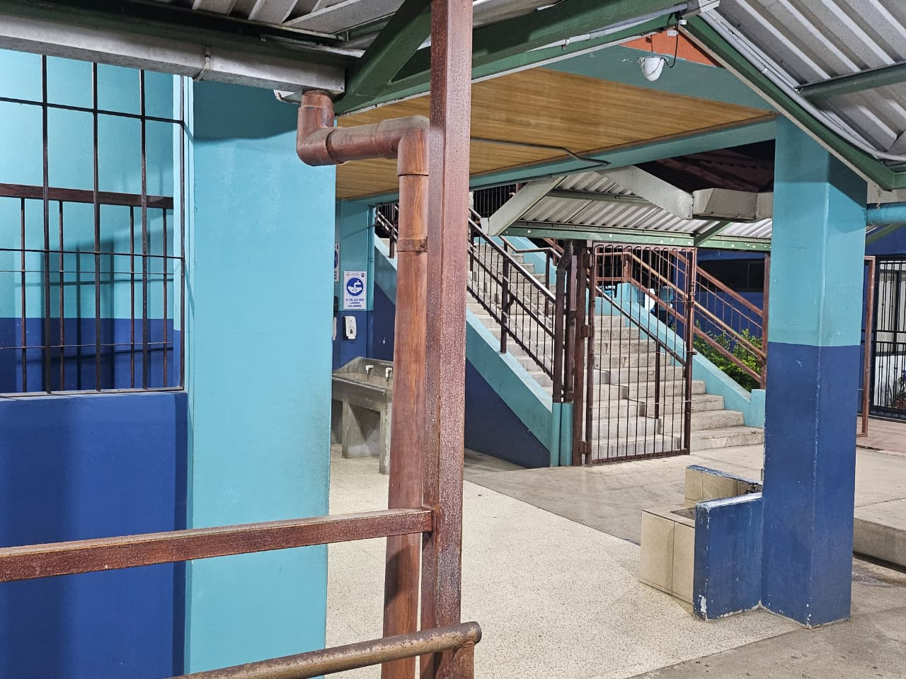

">
">
">
">
">
">Bienvenidos al Colegio Nocturno de Grecia
Oportunidad de estudio, crecimiento personal y profesional al alcance de todos
En 1957 con el nombre de Colegio Nocturno Municipal de Grecia inició sus labores docentes. La historia de origen y evolución de la Educación de Adultos en Costa Rica, se encuentra sintetizada en una serie de decretos emitidos a partir de las dos últimas décadas del siglo pasado. La Educación de Adultos es un instrumento para el desarrollo social y económico del país. Por lo tanto, debe relacionar los intereses del individuo con los de la comunidad a la que pertenece.
Historia
Mision
El Centro Educativo Colegio Nocturno de Grecia es el representante del ente rector que garantiza a los habitantes de la comunidad educativa el derecho fundamental a una educación de calidad, con acceso equitativo e inclusivo, con aprendizajes pertinentes y relevantes, para la formación plena e integral de las personas y la convivencia.
Ser una institución reconocida a nivel comunitario, como la representante del ente rector del sistema educativo costarricense mediante el mejoramiento continuo de la gestión, con estándares modernos de eficacia, eficiencia y transparencia; orientada a la construcción de una sociedad inclusiva e integrada.
Vision
Valores Institucionales
Contribuir a la formación plena e integral de las personas, mediante la educación accesible, inclusiva, orientada al desarrollo de habilidades para la vida, que genere confianza en la comunidad institucional, para el logro de sus aspiraciones de bienestar.